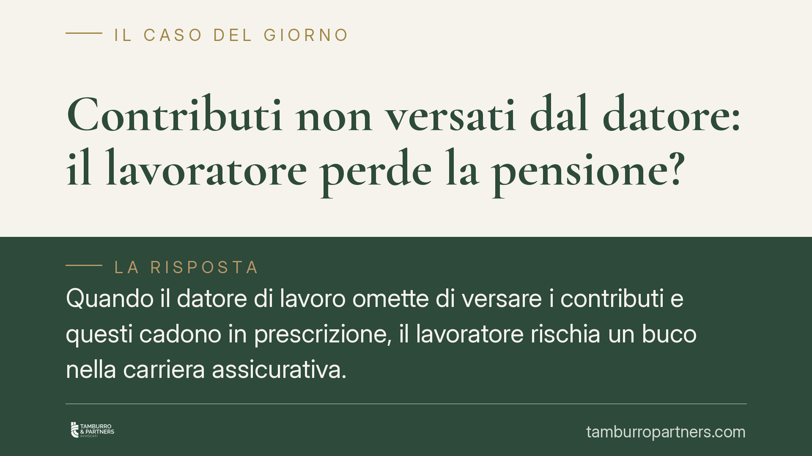

Contributi non versati dal datore: il lavoratore perde la pensione?
Quando il datore di lavoro omette di versare i contributi e questi cadono in prescrizione, il lavoratore rischia un buco nella carriera assicurativa. L'ordinamento offre un rimedio: la rendita vitalizia ex art. 13 della legge n. 1338/1962. Ma per ottenerla servono prove precise. Vediamo quali, come opera lo strumento e cosa fare subito.

Il problema: contributi omessi e ormai prescritti
I contributi previdenziali si prescrivono. Il termine ordinario è di cinque anni (art. 3, comma 9, L. 335/1995): trascorso questo periodo, l'INPS non può più incassarli dal datore né il lavoratore può pretenderne il versamento. Il risultato pratico è un vuoto nella posizione assicurativa che, alla fine della carriera, si traduce in una pensione più bassa o, nei casi limite, nel mancato raggiungimento dei requisiti.
La domanda ricorrente è quindi legittima: se il datore non ha versato e ora è troppo tardi per recuperare, il lavoratore ha perso tutto? No. Esiste un rimedio specifico.
Inquadramento normativo: la rendita vitalizia ex art. 13 L. 1338/1962
L'art. 13 della legge 12 febbraio 1962, n. 1338, consente di ricostruire la posizione assicurativa relativa ai periodi coperti da contribuzione omessa e prescritta. Non si tratta di un semplice "pagamento sostitutivo" dei contributi persi, ma della costituzione, presso l'INPS, di una rendita vitalizia reversibile calcolata sul versamento della cosiddetta *riserva matematica*, ossia la somma necessaria a garantire la prestazione corrispondente ai periodi da recuperare. L'effetto è la valorizzazione di quei periodi ai fini dell'anzianità contributiva e della misura del trattamento pensionistico.
Lo strumento opera su un doppio binario. In via principale è il datore di lavoro a dover costituire la rendita, versando la riserva matematica. Se il datore non provvede, il lavoratore può costituirla in via sostitutiva, salvo il diritto di rivalsa nei confronti del datore inadempiente per il recupero delle somme anticipate.
Il nodo probatorio: due livelli di prova
Il punto più delicato riguarda la prova dei periodi da ricostruire. La giurisprudenza di legittimità, in linea con l'impostazione recepita a livello costituzionale sulla tutela del diritto previdenziale, distingue due livelli:
- L'esistenza e la natura subordinata del rapporto di lavoro richiedono prova documentale scritta. Non bastano testimonianze o presunzioni: servono documenti (buste paga, contratto, lettere, comunicazioni obbligatorie, corrispondenza) che attestino che quel rapporto è esistito e che era di lavoro dipendente.
- La durata del rapporto e la misura della retribuzione, una volta provata per iscritto l'esistenza del rapporto, possono invece essere dimostrate con ogni mezzo, comprese le testimonianze.
Questo assetto — confermato da un consolidato orientamento di merito e di legittimità — protegge l'INPS da domande generiche, ma non impone al lavoratore un onere impossibile: una volta ancorato il rapporto a un documento, il resto si può ricostruire.
> Nota: pronunce di merito recenti hanno ribadito questa lettura. Il valore orientativo resta però quello della giurisprudenza di legittimità, alla quale conviene fare riferimento in sede di domanda.
Implicazioni pratiche per il lavoratore
Chi scopre buchi contributivi — spesso al momento della richiesta dell'estratto conto INPS o in prossimità della pensione — non deve rassegnarsi. Ma deve muoversi con metodo. La prima esigenza è documentale: senza un documento scritto che provi l'esistenza del rapporto, la strada dell'art. 13 si complica sensibilmente. La seconda è temporale: prima si agisce, più facile è reperire i documenti e raccogliere testimonianze attendibili.
È utile ricordare che, mentre i contributi si prescrivono in cinque anni, il diritto a costituire la rendita ex art. 13 segue regole proprie: la valutazione della tempistica va fatta caso per caso, con prudenza e sulla documentazione concreta.
Cosa fare in concreto
- Richiedi l'estratto conto contributivo all'INPS e verifica periodo per periodo la presenza dei versamenti; individua con precisione i vuoti.
- Raccogli e conserva ogni documento scritto del rapporto: buste paga, contratto, lettera di assunzione, comunicazioni obbligatorie, email, bonifici.
- Ricostruisci i testimoni (colleghi, clienti, fornitori) utili a provare durata e retribuzione, una volta acquisita la prova scritta del rapporto.
- Non attendere la vigilia della pensione: agisci appena emergono le omissioni, quando le prove sono ancora reperibili.
- Consigliamo di far esaminare la propria posizione da un professionista, per valutare requisiti, tempistiche e il rapporto tra rendita a carico del datore e costituzione in via sostitutiva.
Disclaimer
Contributo informativo a cura di Tamburro & Partners - Avv. Giuseppe Tamburro. Non costituisce parere legale.
Ogni storia di lavoro ha i suoi tempi.
Se gestisci HR e vuoi un confronto su contenzioso, ispezioni o licenziamenti, scrivi allo studio. Ti rispondiamo entro un giorno lavorativo.